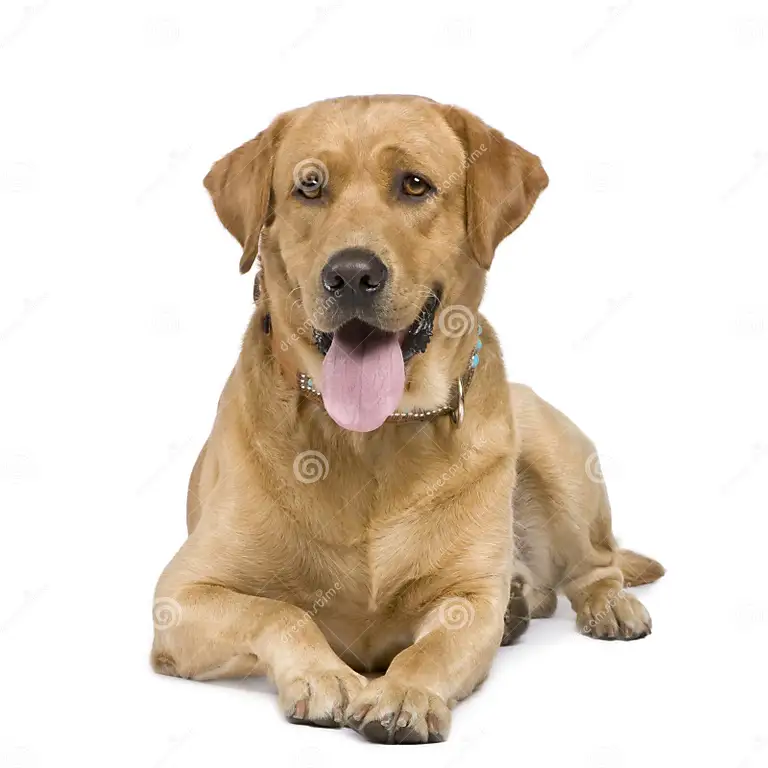
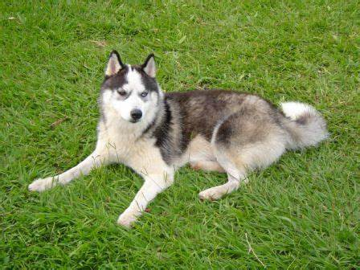
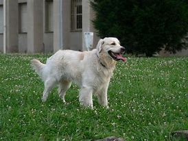
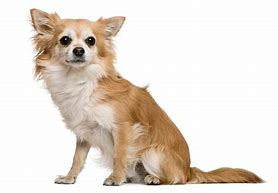

Mascotas Destacadas
Conoce a las mascotas que buscan un hogar. ¡Descubre tu próximo mejor amigo!

Max
Raza: Labrador Retriever
Edad: 3 años
Un compañero leal, lleno de energía y amor para dar.

Luna
Raza: Husky Siberiano
Edad: 2 años
Destaca por su belleza y su espíritu aventurero, ideal para familias activas.
Blaki
Raza: Beagle
Edad: 4 años
Curioso, juguetón y perfecto para hogares llenos de cariño.

Devon
Raza: Pastor Alemán
Edad: 5 años
Inteligente y protector, ideal para hogares que buscan seguridad y compañía.

Kira
Raza: Golden Retriever
Edad: 1 año
Tierna, obediente y perfecta para convivir con niños pequeños.

Rocky
Raza: Chihuahua
Edad: 2 años
Pequeño, valiente y con una gran personalidad, ideal para departamentos.